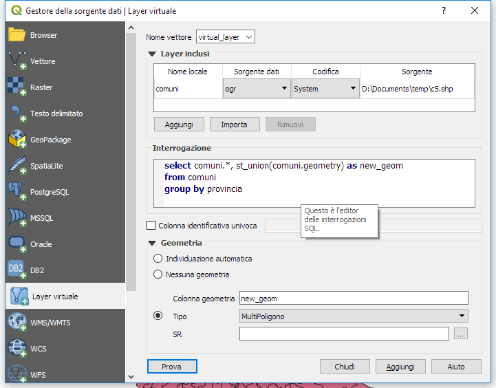

INTRODUZIONE AI DATABASE GEOSPAZIALI
https://enricofer.github.io/spatial_sql_workshop/
FOSS4G Italia 2021
(C)2021 CC-BY-SA Enrico Ferreguti enricofer@gmail.com Luca Lanteri lklanteri@gmail.com Rocco Pispico r.pispico@gmail.com
Esercitazione guidata
SINTASSI SQL
In linguaggio SQL sono possibili parecchi tipi di Query:
query di creazione tabella:
query di inserimento dati:
query di cancellazione tabella:
query di aggiornamento:
SQL SELECT
ma quello che ci interessa oggi è la query di ricerca
I dialetti SQL sono molti e ci sono grandi differenze di dettaglio.
Ma la struttura della sintassi principale per l'estrazione dei dati
rimane praticamente la stessa per tutti i RDBMS.
Oggi lavoreremo con SQlite, nella sua versione con estensioni spaziali
Spatialite
il cui sviluppo è open source ed è curato da
Alessandro Furieri
L'ambiente di lavoro del Workshop
Per facilitare e velocizzare il workshop le esercitazioni sono completamente basate su un una versione speciale di Spatialite compilata per l'utilizzo da browser. Il database è residente nella memoria del browser, ma è facilmente scaricabile per l'utilizzo con QGIS per chi lo desidera:dati esercitazione
E' possibile una visualizzazione tabellare:
o una visualizzazione su mappa: Le tabelle contengono un campo *geom* con le informazioni spaziali memorizzate in latitudine e longitudine (WGS84 epsg:4326) e visualizzabili
producendo una geometria geojson per mezzo della funzione AsGeoJSON()
Il formato geojson è un formato testuale facilmente interpretabile da javascript come un'oggetto (dati serializzati) contentente dati geografici e relativi attributi. Il formato è uno standard codificato di internet e costituisce una specie di lingua universale per l'interscambio di dati geografici nel web
I dati dell’esercitazione
Dati ISTAT (http://www.istat.it/it/archivio/104317) Limiti provinciali del Piemonte (province poligonale) Località abitate (localita poligonale) Tabella TIPO_LOC Tipologia di località 2001/2011. (tipo_localita.csv) Il campo può assumere i seguenti valori: 1. centro abitato 2. nucleo abitato 3. località produttiva 4. case sparse Da Geoportale Regione Piemonte (http://www.geoportale.piemonte.it/cms/) Limiti amministrativi comunali (comuni poligonale) Una selezione della viabilità principale (autostrade lineare)
SELECT ... FROM ... WHERE ...
query di ricerca SELECT
Disponiamo delle seguenti tabelle, visualizzabili eseguendo le query:
L'elenco delle tabelle e dei relativi campi disponibili può essere visualizzato in ogni momento premendo il bottone "elenco tabelle"
Esercitazione SELECT
Indicare i campi delle tavole che si desidera selezionare, è possibile indicare anche un ALIAS. Elenco delle tavole, anche in questo caso è possibile indicare un ALIAS. Indicare la clausola di JOIN tra le due tabelle.
Durante la fase di test è consigliato impostare un limite massimo di risultati con la clausola: Limit
FUNZIONI GEOSPAZIALI
Funzioni geometriche di Spatialite
L'estensione spaziale di SQlite è Spatialite, e dispone di una serie molto completa di funzioni per la manipolazione di informazioni geografiche: Reference List
Le funzioni basilari che utilizzeremo nel workshop sono le seguenti
- condizioni topologiche (condizioni spaziali): dentro, fuori, contenuto da, coincidente etc...
- manipolazione geometrica (aggregazione): unione, differenza, intersezione, buffer, generalizzazione
- misurazione geometrica: lunghezza, area, distanza
- estrazione geometrica: centroidi, linee di unione
- trasformazioni: riproiezioni, conversioni di formati geometrici
Il campo geometria
I tipi geometrici possono essere i seguenti:
- geometria puntuale (POINT e MULTIPOINT)
- geometria lineare (LINESTRING e MULTILINESTRING)
- geometria poligonale (POLYGON e MULTIPOLYGON)
L'informazione spaziale è contenuta in almeno un campo geometrico. Nelle tabelle del workshop il campo geografico è per convenzione il campo "geom", ma nulla vieta che possa avere un altro nome.
Il formato di memorizzazione è binario, e quindi non visualizzabile "per gli umani" ma disponiamo di funzioni che permettono di trasformarlo in un formato più amichevole:
Esercitazione 4
VISUALIZZAZIONE
campi calcolati ed alias
ESERCITAZIONE 6 - Le subquery
ESERCITAZIONE 7 - test geospaziali
In questa query viene calcolato il numero di località presente in ogni comune. Dato che l'operazione viene fatta sulla combinazione dei dati di due tabelle (record tabella1 x record tabella2), il numero di dati su cui si va ad operare è enorme, quindi è opportuno restringere il campo di ricerca inserendo delle condizioni in WHERE
In tutti i database la valutazione delle condizioni WHERE si dice che è "lazy" ovvero alla prima condizione false si tralascia la valutazione delle restanti condizioni
Quindi prima restringiamo la ricerca ad un codica provincia, poi valutiamo se le estensioni delle geometrie coincidono con st_envelope e solo allora andremo ad effettuare il test sull'intersezione tra geometrie con st_intersects che è una funzione molto pesante dal punto di vista computazionale
Tipi geometrici

Visualizzazione in mappa
Il risultato della query può essere visualizzato in mappa quando la tabella di output contiene un campo "geojson" contente le geometrie da visualizzare in formato geojson:
Il formato geojson è l'espressione testuale di un'oggetto javascript prodotta secondo lo standard "json" ed è facilmente "digeribile" dalle applicazioni web
L'altra condizione perchè la geometria possa essere visualizzata correttamente nel visualizzatore è che il dato geografico deve essere espresso in gradi di latitudine e longitudine. Le tabelle predefinite sono nel formato ETRS89-epsg4258, sono quindi compatibili con il visualizzatore
Condizioni topologiche

AGGREGAZIONE SPAZIALE
Le funzioni spaziali possono essere usate per collezionare le geometrie aggregate da una query di raggruppamento
L'intersezione tra geometrie lineari genera geometrie puntuali:
MISURE, TRASFORMAZIONI E BUFFER
E' possibile acquisire dati dimensionali delle geometrie inserite lunghezze, aree, distanze
Essendo le geometrie espresse in latitudine e longitudine, I dati geometrici sono espressi in gradi. E' quindi necessario trasformare le coordinate in un sistema di riferimento proiettato per ottenere le corrette dimensioni in metri
La funzione di buffer genera un poligono i cui vertici distano ad una distanza costante da una geometria generatrice
ELABORAZIONI
Quali sono i centri serviti dalla ferrovia?
Individuazione di un buffer di 10 km dalla ferrovia
individuazione dei comuni ricadenti nel buffer appena individuato
metodo alternativo meno performante ma che recupera i dati
NB: i dati geografici sono espressi in latitudine e longitudine quindi la distanza di buffer va espressa in gradi (0.01 gradi corrispondono circa a 950 m)
Qual'è la popolazione dell'area metropolitana di Torino?
Individuazione dei comuni limitrofi
Usando st_intersects al posto di st_touches si include anche il comune stesso di Torino
Quanto è lungo Corso Francia?
Individuazione del fiume: Trattandosi di un grafo idrologico, il fiume è individuato da una serie di archi:
Metodo 1: quindi si può raggruppare sommando la lunghezza di ugni arco
Nota bene: Questa query non funzionerebbe in postgis poichè nel caso di raggruppamento Postgresql richiede di specificare una funzione di aggregazione per ogni campo
Quanti e Quali comuni sono attraversati dal fiume Brenta?
Metodo 1: con subquery
Metodo 2: con join
Nota bene: Questa query non funzionerebbe in postgis poichè nel caso di raggruppamento Postgresql richiede di specificare una funzione di aggregazione per ogni campo
QGIS
Spatialite in QGIS
E' possibile replicare in ambiente QGIS le esercitazioni del workshop. In tal caso è necessario:
- Scaricare in locale il database dell'esercitazione: veneto.sqlite
- Stabilire una connessione con il database
- Aprire DB MANAGER
- Incollare le query nella finestra SQL ed aggiungerle in mappa
Virtual layers in QGIS
Un'altro modo per usare in modo produttivo le query geospaziali in QGIS sono i Virtual Layers:
I virtual Layers sono una caratteristica poco nota ma molto potente di QGIS, e permettono di creare relazioni SQL tra i layer correntemente caricati da qualunque datasource. Il virtual layer viene rigenerato in modo automatico e trasparente ogni qualvolta vengono aggiornati i layers collegati al layer virtuale:
La funzionalità è resa possibile replicando i layers in un database Spatialite locale gestito direttamente da QGIS, dunque la sintassi da utilizzare nelle query è quella di Spatialite. Su questa funzionalità è disponibile un breve ma chiaro tutorial di Totò Fiandaca
/ − GFOSS 2021 − Introduzione ai database geospaziali